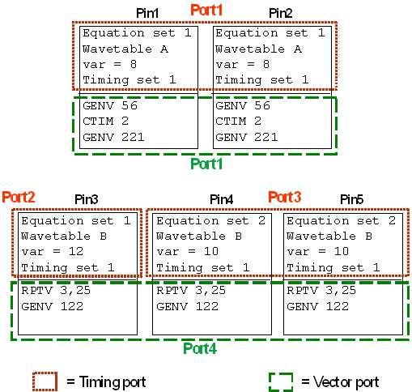

Multi-port burst labels
Multi-port burst labels serve to start the execution of bursts for different ports in parallel. They consist of one or more user port bursts. The only difference between a user port burst and a normal single-port burst is that the user port burst is associated with a port that is defined by the user and will usually contain only a proper subset of the configured pins, whereas a single-port burst is defined for the default port @.
The ports belonging to a multi-port burst may not cover all configured pins. Pins that are not included in the multi-port burst will be supplied with break vectors. Thus, a multi-port burst may contain only one user port burst.
Multi-port burst labels are the only label type whose name is not unique across ports. In fact, the identical label name in the different ports indicates which ports are included in the multi-port burst label. Note, however, that the multiple occurrences of a multi-port burst label name are made unique internally by adding the @ character and the port name to the name. Thus, the format of the internal name is
<label>@<port_name>
Some commands (for example, BLUP and SQLA) require, or return, this internal name.
The sequencer programs for a multi-port burst label have the same structure as those for a normal burst label.
Limits
- The maximum number of labels is limited to 32766 labels per port.
- The maximum number of ports is 256.
- The number of main labels that are called from a burst is limited by the sequencer memory of
the channel.
Each call uses 8 bytes of sequencer memory.
- The maximum number of labels in the pattern master file is determined by the same limits.
Example
The following listing shows the definitions of a multi-burst label for the ports
port1 and
port4:
SQLB "MP_burst",MPBU,6,7,"vg1",(port1) SQLB "MP_burst",MPBU,5,6,"vg2",(port4)
The next to last parameter specifies a sequencing group (also called synchronization group) for the respective port, see Synchronizing vectors in a multi-port setup.
The associated sequencer programs look as follows:
SQPG 6,CALL,,"pat1",,(port1) SQPG 7,BEND,,,,(port1)
and:
SQPG 5,CALL,,"pat4",,(port4) SQPG 6,BEND,,,,(port4)
The sequencer programs of the MAIN labels that are called by the two port bursts could look as follows:
SQLB "pat1",MAIN,0,5,"wavetable A",(port1) SQPG 0,STVA,,0,,(port1) SQPG 1,STSA,,,,(port1) SQPG 2,GENV,56,,,(port1) SQPG 3,CTIM,2,,,(port1) SQPG 4,GENV,221,,,(port1) SQPG 5,STOP,,,,(port1) SQLB "pat4",MAIN,0,4,"wavetable B",(port4) SQPG 0,STVA,,0,,(port4) SQPG 1,STSA,,,,(port4) SQPG 2,RPTV,3,25,,(port4) SQPG 3,GENV,122,,,(port4) SQPG 4,STOP,,,,(port4)
If you combine this vector setup with the multi-port timing specification of Multi-port timing specifications, the complete setup could be illustrated in schematic form as follows:

The timing setup information is contained in the upper half of the blocks representing the individual pins. It contains not only the specification data, but also the timing set to be used at pattern start. The sequencer programs are represented in the lower half. Note that the ports for the timing and those for the vectors are different. For more details on this see Timing ports and vector ports.
Functional changes
- Introduced before SmarTest 6.3.2
- SmarTest 7.2.0: Max number of ports increased to 256